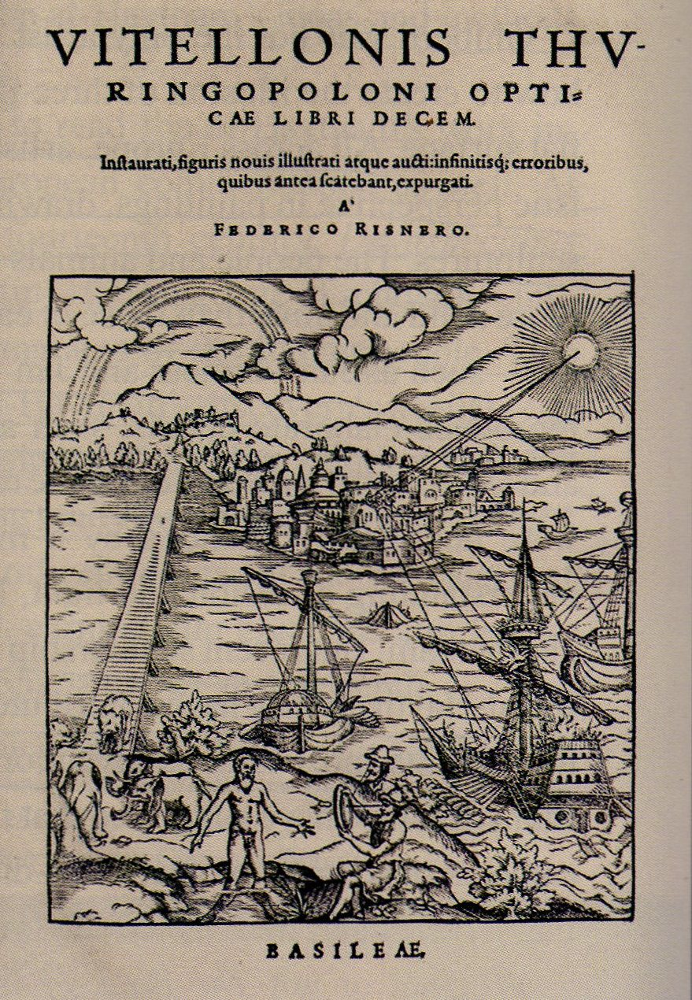

Friedrich Riesner. Frontispicio de Opticae Thesaurus de Ibn al-Haytham, 1572. Basilea: Eusebius Episcopius
La primera edición impresa apareció en 1572 con la excelente obra de Friedrich Risner Opticae thesaurus. La edición de Risner reúne, por un lado, una presentación de la obra de Alhacén elaborada a partir de algunas de las ediciones manuscritas existentes en Europa, y, por otro lado, la versión de Witelo sobre los principales aportes de Alhacén. La edición definitiva de 1572 permitió contar en Europa con una versión canónica del trabajo de Alhacén, versión que se constituyó en una de las fuentes de inspiración de Kepler, Descartes y Huygens. No obstante, la versión latina tiene algunas deficiencias. Los tres primeros capítulos del libro I en la versión original en árabe, allí donde se establecen algunos criterios metodológicos, no están presentes en la versión europea. Lagunas similares se encuentran en los libros restantes. En consecuencia, la versión en latín no es una réplica exacta de la versión árabe. La versión original en árabe ha sido traducida al inglés recientemente por Sabra, A. I. (1989) bajo el título The Optics of Ibn al-Haytham books I-III on Direct Vision, en tanto que la versión latina ha sido llevada al inglés por Mark Smith (2001) con el título Alhacen’s theory of visual perception (libros I-III), Mark Smith (2006) Alhacen on the principles of reflection (libros IV, V) y Mark Smith (2008) Alhacen on image-formation and distortion in mirrors.
El De Aspectibus es un compendio de 7 libros. El libro I presenta un esbozo general de la teoría de la visión de Alhacén. El libro II da cuenta de su forma peculiar de concebir la psicología de la percepción. Este libro sienta las bases teóricas para que el libro III se ocupe de los errores inducidos en la percepción visual provocados por la percepción directa. Los libros IV y V se ocupan de la reflexión y formación de imágenes en espejos planos y en espejos esféricos. En estos libros se enuncia y se resuelve con todo lujo de detalles el famoso Problema de Alhacén. El libro VI –complemento del III– se ocupa de los errores en la percepción visual ocasionados por rayos reflejados. Por último, el libro VII se detiene en la refracción de la luz. Allí Alhacén aprovecha la oportunidad para discutir la solución que Ptolomeo le había dado al problema de la ilusión de la luna. Esto es, al hecho de que la Luna ofrece un aspecto de mayor tamaño cuando se contempla en el horizonte comparado con el aspecto que ofrece cuando ella se encuentra en el zenit.
No es difícil establecer con claridad las principales influencias en la obra de Alhacén. Aristóteles contribuye para establecer una actitud y, quizá, un método para la investigación científica en general. Euclides y Apolonio, aun cuando este último con un protagonismo menor, aportan el trasfondo geométrico. La obra de Ptolomeo sugiere problemas y aporta la dirección específica en la que han de enfrentarse. En muchos casos Alhacén se limita a servir de correa de transmisión de las ideas de Ptolomeo. Por último, la anatomía del ojo se toma casi directamente de los trabajos de Galeno. En el contexto árabe, Ya ‘qūb al-Kindi (801-866) contribuyó a la asimilación del pensamiento griego e inició la osadía de participar en dicha empresa con una mirada crítica. Si bien Aristóteles se había sentido inclinado a pensar que el corazón podía ser el asiento del alma, Galeno se atrevió a sostener que las funciones más importantes asociadas al alma debían tener su asiento en el cerebro. Los pensadores árabes quisieron ofrecer una descripción galenizada de la psicología de Aristóteles. Ellos quisieron asignar ciertas facultades psicológicas a regiones específicas del cerebro. Una buena parte de esta síntesis, sin duda estudiada por Alhacén, se encuentra en Los diez tratados del ojo atribuido a Hunayn ibn Ishāq (809-873). En general la óptica temprana árabe estaba concentrada en la recepción de la obra de Euclides. Alhacén es, sin duda, el primer pensador árabe en ocuparse seriamente de los aportes de Ptolomeo.
Sin el ánimo de ser exhaustivos, podemos reducir a seis los aportes básicos de Alhacén en el De Aspectibus:
- Ofrecer argumentos definitivos en favor del intramisionismo. A propósito de los fenómenos asociados con la percepción visual, los griegos se debatían entre, por un lado, concepciones extramisionistas (Platón, Euclides, Ptolomeo) que asumen que un cierto efluvio que emana del ojo sale al encuentro del objeto hasta entrar en contacto directo con él, provocando después la aparición de una imagen o fantasma del objeto contemplado; y, por otro lado, concepciones intramisionistas (Aristóteles, atomistas) que abogan porque alguna modificación del objeto sobre el medio sea la responsable de que el ojo reciba la forma sensible del objeto correspondiente. Alhacén, por su parte, ofreció argumentos poderosos en favor del intramisionismo y mostró cómo podía usarse en este caso el modelo de la pirámide euclidiana, concebida inicialmente para esquemas extramisionistas. En efecto, si pensamos que es a partir del ojo que emana cierto efluvio visual, conviene preguntar si hay algo que regresa al ojo o nada retorna. En el segundo caso nada podría percibirse. En el primero nos vemos obligados a restituir la tesis intramisionista. También conviene preguntar si ese efluvio es o no corporal. Si es corporal, hemos de admitir algo absurdo; esto es que una sustancia corporal que emana del ojo puede llenar en un solo momento todo el espacio que tenemos al frente desde nuestros ojos hasta la inmensidad del cielo, sin que el ojo sienta mengua alguna en su constitución. Si no es corporal no hay espacio para hablar de sensación, toda vez que ella implica el reconocimiento de objetos físicos por la afección que ellos producen en nuestros órganos corporales (Alhacén, I, 6.56).
- Elucidar la naturaleza compleja del vértice en la pirámide visual euclidiana. La pirámide visual de Euclides es un instrumento que, sin duda, simplifica el análisis de la visión. En el caso de Euclides lo fundamental es: (i) un observador reducido a un punto (el vértice de la pirámide); (ii) un objeto que ha de ser contemplado y que constituye la base de la pirámide; (iii) una mediación que ocurre en virtud de líneas rectas entre el objeto y el observador; y (iv) un observador que lee las claves geométricas de la mediación para inferir posiciones, tamaños y distancias del objeto percibido. Ahora bien, concebir el observador como un punto geométrico es una simplificación que deja por fuera aspectos esenciales. Un punto, según Euclides, es aquello que no tiene partes. Concebir el ojo como un algo sin partes no nos permite abrazar la complejidad que en sí encierra la percepción. Alhacén, considerando la información anatómica aportada por Galeno, procuró establecer la funcionalidad geométrica de cada una de las partes del ojo.
- Aportar una descripción psicológica muy completa de los procesos de inferencia presentes en la percepción directa. El ojo es una ventana abierta que permite instalar en la pared posterior del cristalino una imagen isomórfica del objeto contemplado. A continuación esta imagen es capturada, sentida y transportada por los espíritus visuales a través del nervio óptico hasta el nervio común y por éste hasta la parte frontal del cerebro sin pérdida del isomorfismo inicial. Allí el sensor central está en condiciones de percibir las propiedades visibles, algunas de ellas encarnadas –en el buen sentido aristotélico– en los objetos exteriores. Entre estas propiedades conviene asentar la siguiente distinción. De un lado se encuentran las propiedades que se perciben por la sensación bruta [sensu solo] y, de otro lado, las propiedades que son percibidas gracias a la intervención del juicio, del reconocimiento y de la diferenciación en conjunción con la sensación de las formas percibidas. Alhacén adelantó un juicioso estudio de las características de las inferencias presentes en la percepción visual1.
- Advertir la importancia de métodos experimentales y modelos matemáticos para validar conjeturas en el estudio de la óptica. Todas las superficies reflectantes desvían la luz, forma y color. Lo hacen ajustadas a dos principios centrales: (i) dado un punto de reflexión sobre la superficie ocurre que la línea de incidencia y la línea de reflexión se encuentran en el mismo plano con la normal trazada a la superficie en el punto de reflexión; y (ii) tales líneas forman con la normal ángulos equivalentes (Alhacén, IV, 3.2). El filósofo árabe no se limitó a sugerir plausibles argumentos especulativos o a apoyarse en la tradición (Aristóteles, Euclides, Ptolomeo) para soportar las mencionadas leyes, sino que intentó someterlas a una rigurosa verificación empírica. Para ello dispuso de un cilindro macizo, sellado completamente, cuya base inferior contenía el dibujo de rectas de guía convergentes en el centro de la base del cilindro prefigurando el paso de la luz. Las paredes del cilindro poseían orificios justo en los puntos de intersección de las líneas de guía de la base y las paredes del cilindro. Estos agujeros se sellaban con bloques de madera fácilmente removibles. En la base se podía disponer un espejo en una posición controlada por el experimentador. Alhacén destapaba un agujero para permitir la entrada controlada de la luz y, después, retirando uno a uno cada tapón, buscaba la trayectoria de salida del rayo de luz reflejado.
De otra parte, Alhacén, siguiendo a Euclides y a Ptolomeo, se esmeró por hacer de la geometría el canon con el que debían presentarse los problemas y las soluciones asociadas con el estudio de los fenómenos ópticos. Así, la geometría logra encarnarse en el estudio de la percepción visual. No se trata de un instrumento adicional que pudiese hacernos la vida más cómoda. La geometría es el lenguaje en el que se puede formular significativamente las preguntas propias que atañen al estudio de la percepción visual.
- El problema de Alhacén. El problema se trata con mayor extensión en el cuerpo del presente documento.
- Reiniciar los estudios cuidadosos de la refracción. Alhacén intentó darle continuidad a los estudios que Ptolomeo había iniciado a propósito de las regularidades matemáticas implícitas en los fenómenos de refracción de la luz. Él advirtió los problemas de Ptolomeo en el momento de pretender explicar el aumento del tamaño aparente de la Luna cuando era contemplada en el horizonte. Cuando un observador en la Tierra dirige su mirada al cielo, asimila la superficie celeste a un plano que se extiende indefinidamente en todas las direcciones. Así las cosas, cuando contempla la Luna en el horizonte, la mente habrá grabado la expectativa que impone que la distancia a la Luna es bastante mayor comparada con la distancia recordada en el zenit. Si en los dos casos imaginamos objetos que poseen el mismo tamaño absoluto, ellos serán contemplados bajo conos visuales de la misma amplitud angular; en consecuencia, como en el horizonte la Luna parece más distante, la facultad visual aventurará la hipótesis según la cual, la Luna debe ser un objeto de mayor amplitud en su tamaño.
1 No carece de fundamento pensar en una anticipación a algunas claves fenomenológicas en la presentación de Alhacén. Cfr. EL-BIZRI, N., (2005), “A philosophical perspective on Alhazen´s optics”, Arabic Sciences and Philosophy, vol. 15 pp. 189-218.